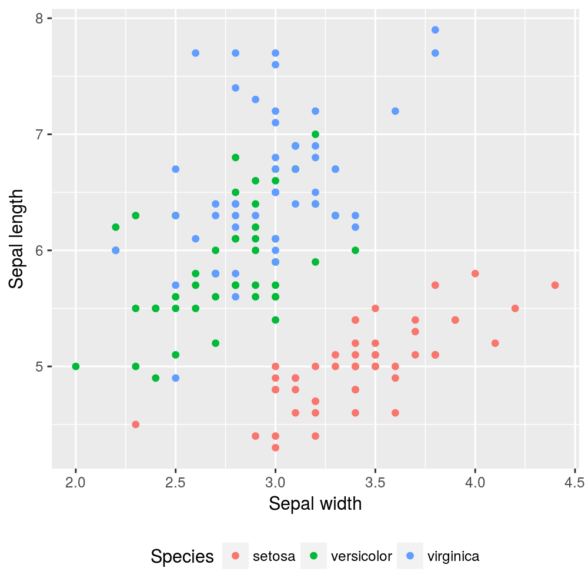
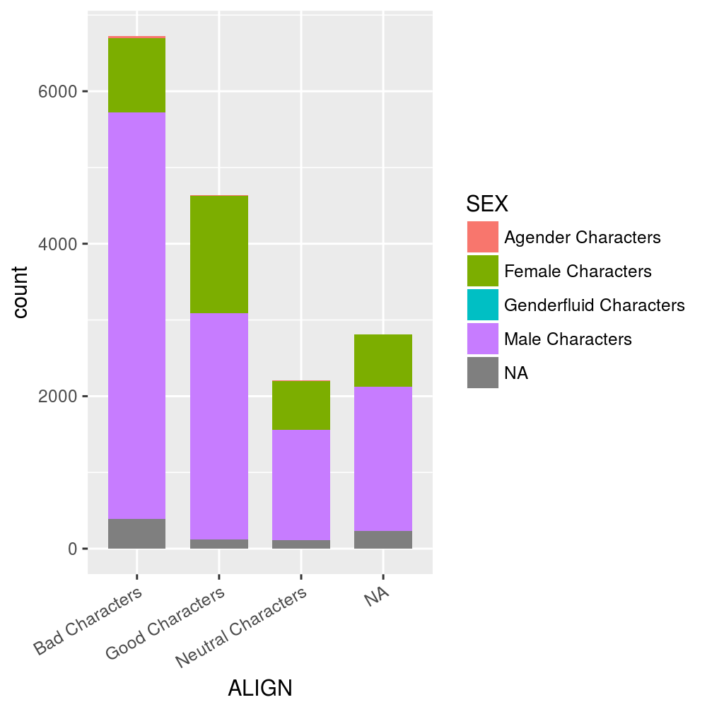
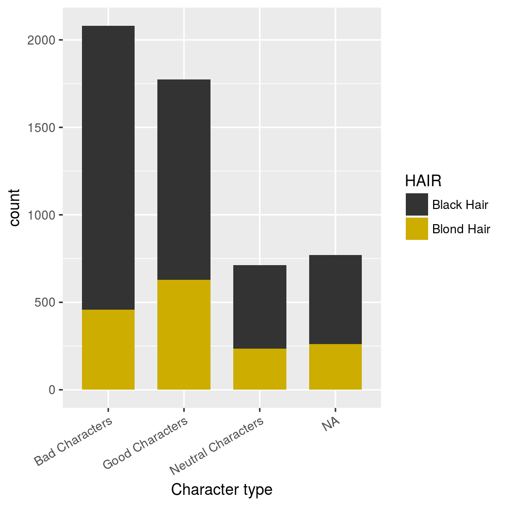
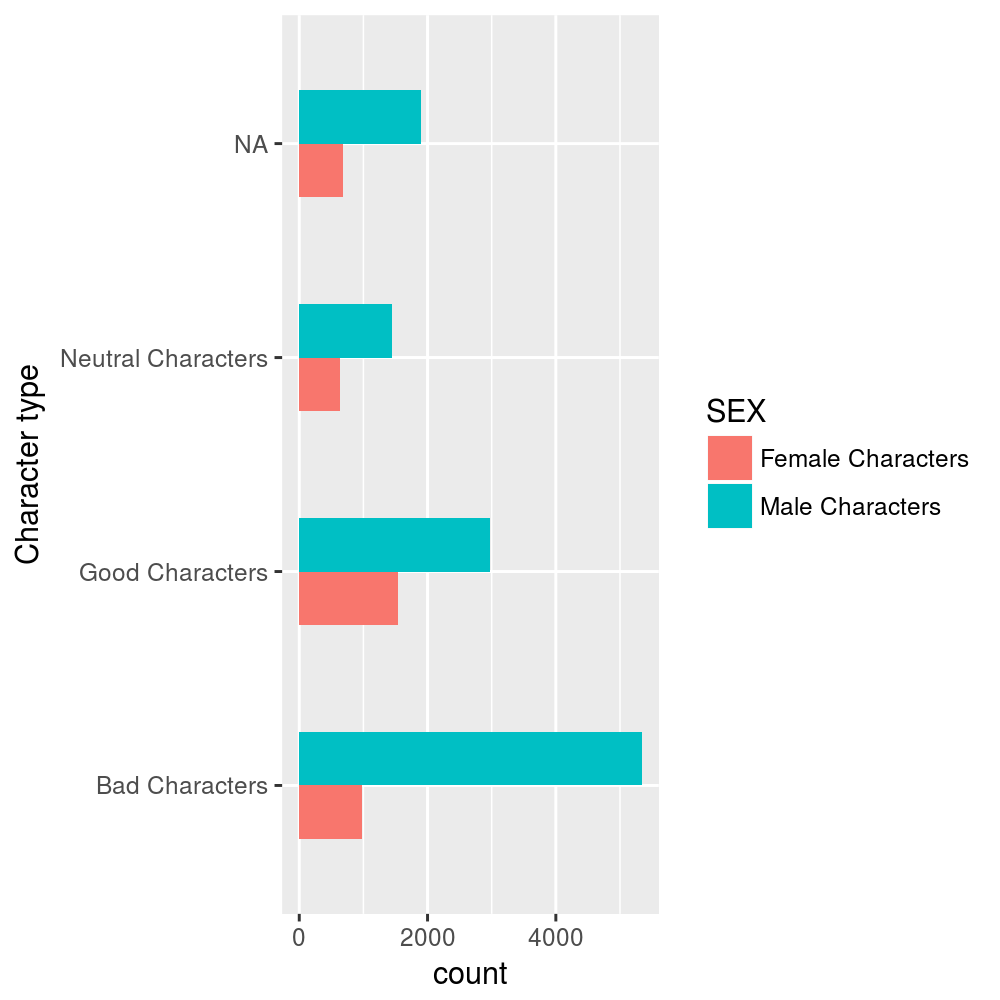
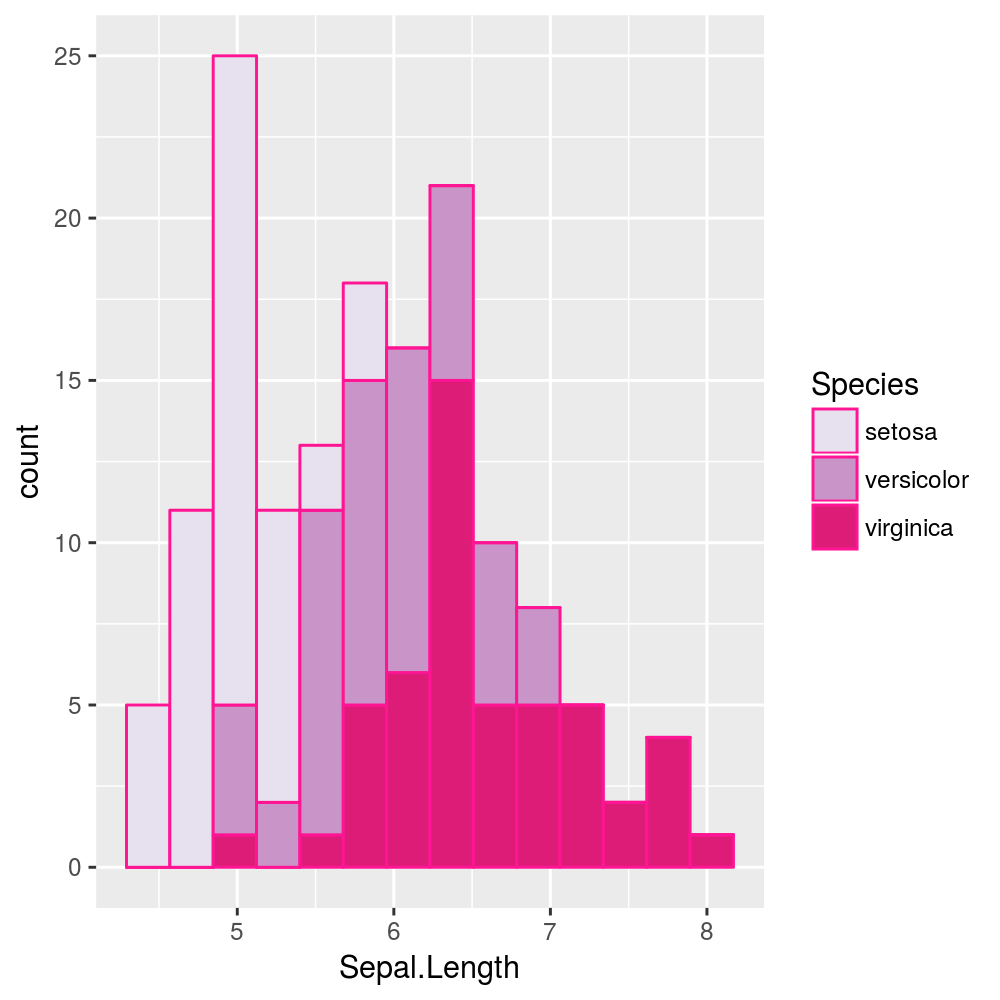
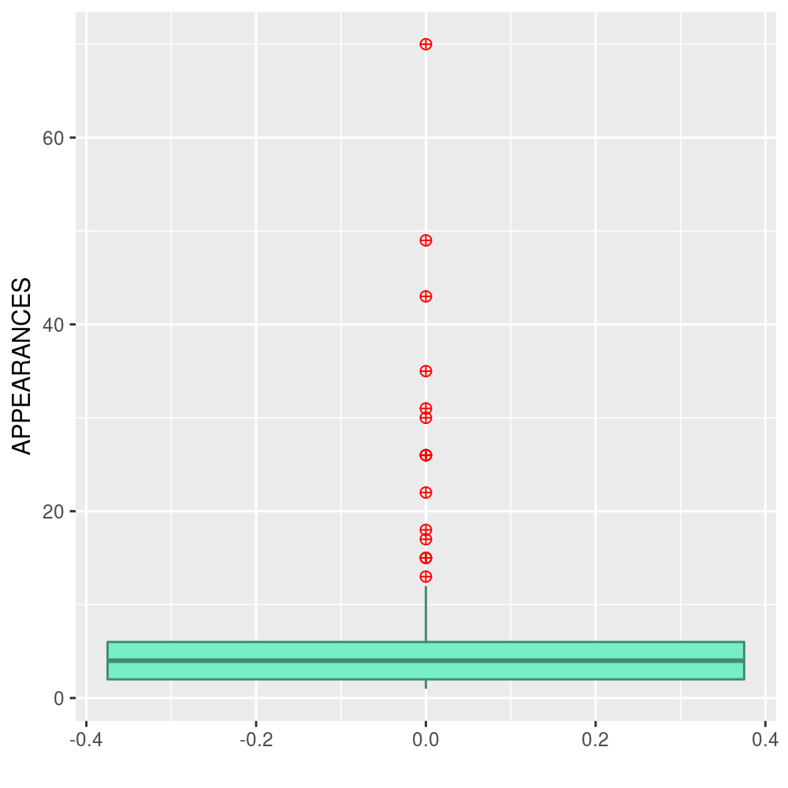
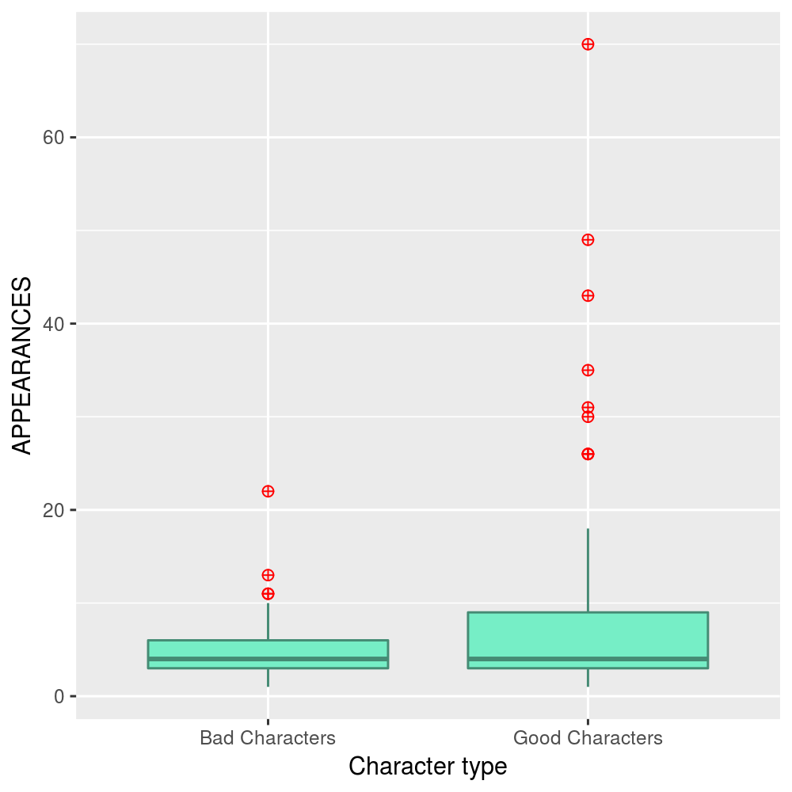

null
null
null
Data Visualization with ggplot2
Load ggplot2 package, supposing it is already installed.
require(tidyverse)
require(grid)Data
iris
Some of the following exercises are based on the iris dataset, taken from the datasets package.
It is a base package so it is already installed and loaded.
data("iris")This dataset gives the measurements in centimeters of length and width of sepal and petal, respectively, for 50 flowers from each of 3 species of iris. The species are Iris setosa, versicolor, and virginica.
iris dataset contains the following variables:
Sepal.Length: length of iris sepalSepal.Width: width of iris sepalPetal.Length: length of iris petalPetal.Width: width of iris petalSpecies: species of iris
dim(iris)## [1] 150 5head(iris)## Sepal.Length Sepal.Width Petal.Length Petal.Width Species
## 1 5.1 3.5 1.4 0.2 setosa
## 2 4.9 3.0 1.4 0.2 setosa
## 3 4.7 3.2 1.3 0.2 setosa
## 4 4.6 3.1 1.5 0.2 setosa
## 5 5.0 3.6 1.4 0.2 setosa
## 6 5.4 3.9 1.7 0.4 setosastr(iris)## 'data.frame': 150 obs. of 5 variables:
## $ Sepal.Length: num 5.1 4.9 4.7 4.6 5 5.4 4.6 5 4.4 4.9 ...
## $ Sepal.Width : num 3.5 3 3.2 3.1 3.6 3.9 3.4 3.4 2.9 3.1 ...
## $ Petal.Length: num 1.4 1.4 1.3 1.5 1.4 1.7 1.4 1.5 1.4 1.5 ...
## $ Petal.Width : num 0.2 0.2 0.2 0.2 0.2 0.4 0.3 0.2 0.2 0.1 ...
## $ Species : Factor w/ 3 levels "setosa","versicolor",..: 1 1 1 1 1 1 1 1 1 1 ...Comic characters data
Other exercises are based on marvel_wikia_data dataset, that you may find in the folder exercises/data.
marvel_wikia_data <- read_csv("marvel-wikia-data.csv")## Parsed with column specification:
## cols(
## page_id = col_integer(),
## name = col_character(),
## urlslug = col_character(),
## ID = col_character(),
## ALIGN = col_character(),
## EYE = col_character(),
## HAIR = col_character(),
## SEX = col_character(),
## GSM = col_character(),
## ALIVE = col_character(),
## APPEARANCES = col_integer(),
## `FIRST APPEARANCE` = col_character(),
## Year = col_integer()
## )The data comes from Marvel Wikia. The file was scraped in August 2014 and contains the following variables:
page_id: The unique identifier for that characters page within the wikianame: The name of the characterurlslug: The unique url within the wikia that takes you to the characterID: The identity status of the character (Secret Identity, Public identity, [on marvel only: No Dual Identity])ALIGN: If the character is Good, Bad or NeutralEYE: Eye color of the characterHAIR: Hair color of the characterSEX: Sex of the character (e.g. Male, Female, etc.)GSM: If the character is a gender or sexual minority (e.g. Homosexual characters, bisexual characters)ALIVE: If the character is alive or deceasedAPPEARANCES: The number of appareances of the character in comic books (as of Sep. 2, 2014. Number will become increasingly out of date as time goes on.)FIRST APPEARANCEThe month and year of the character’s first appearance in a comic book, if availableYEAR: The year of the character’s first appearance in a comic book, if available
dim(marvel_wikia_data)## [1] 16376 13head(marvel_wikia_data)## # A tibble: 6 x 13
## page_id name
## <int> <chr>
## 1 1678 Spider-Man (Peter Parker)
## 2 7139 Captain America (Steven Rogers)
## 3 64786 "Wolverine (James \\\"Logan\\\" Howlett)"
## 4 1868 "Iron Man (Anthony \\\"Tony\\\" Stark)"
## 5 2460 Thor (Thor Odinson)
## 6 2458 Benjamin Grimm (Earth-616)
## # ... with 11 more variables: urlslug <chr>, ID <chr>, ALIGN <chr>,
## # EYE <chr>, HAIR <chr>, SEX <chr>, GSM <chr>, ALIVE <chr>,
## # APPEARANCES <int>, `FIRST APPEARANCE` <chr>, Year <int>Scatterplot
Let us consider iris dataset.
Exercise 1
- Generate a scatterplot to analyze the relationship between
Sepal.WidthandSepal.Lengthvariables.
- Set the size of the point as 3 and their colour (
colourandfillarguments) as “green”. advanced c. Add “Sepal Characteristics” as a red italic title and change axis title to “Sepal length” and “Sepal width”.

Exercise 2
- Generate a scatterplot to analyze the relationship between
Petal.WidthandPetal.Lengthvariables according to iris species, mapped ascolouraes. advanced b. Change axis title to “Sepal length” and “Sepal width”. advanced c. Move the legend to the bottom.

Line PLot
Let us consider marvel_wikia_data dataset.
Exercise 1
- Build a line plot to see the number of new characters that come out each year.
- Build a lineplot to compare the differences in the number of female characters and male characters that come out each year.
- Do as in b. but use different line types as well as different point types and different colours advanced d. Choose a blue colour palette to represent the different lines (
scale_colour_brewer(palette="PuBu")) advanced e. Modify axis names and the key labels withscale_colour_brewerchoosing optionsname = "Characters gender"andlabels=c("Agender", "Female", "Genderfluid", "Male", "Not available")).
Barplot
Let us consider the marvel_wikia_data dataset.
Exercise 1
- Build a stacked barplot for representing the number of new comic characters distinguishing them by
ALIGNand map fill toSEX. Set bars width as 0.7. advanced b. Rotate the x axis by 30° so that the axis text nomore overlaps. - Consider only comic characters with blond hair and Black Hair (
filter(HAIR == "Black Hair" | HAIR == "Blond Hair")). Build a stacked barplot for representing the number of new comic characters distinguishing them byALIGNand map fill toHAIR. - Take the barplot in (b.) and represent the distribution on Blond Hair between the character type (Good, Bad, neutral). advanced e. Manually set colour
grey20for black hair andgold3for blond hair and change the axis name fromALIGNtoCharacter Type.


Exercise 2
- Consider only female and male comic characters (
filter(SEX == "Male Characters" | SEX == "Female Characters")). Build a barplot with dodged barsfor representing the number comic characters distinguishing them byALIGNand flip coordinates. Set bars width as 0.5.
advanced b. Consider only comic characters with blue, black and brown eyes. Set facet_grid(~ EYE) advanced c. Customise legend, axis names and colours so that your plot is as clear as possible (for instance, you may choose colour blue for males and pink for females).

Histogram
Let us consider iris dataset.
Exercise 1
- Represent the distribution of
Sepal_Lengthvariable with an histogram. - Set bins fill colour as “hotpink” and bins line colour as “deeppink”.
- Set the number of bins as 15.
advanced d. Map the grouping variable Species to fill and choose a pink colour palette (PuRd)

advanced e. Using facet_grid() produce a different panel for each Species
Line graph
Exercise 1
Let us suppose that the observations on iris are taken along time.
So let us consider the following dataset, named iris2, in which time variable is added:
require(dplyr)
iris2 <- iris %>% mutate(time=1:150)- Build a line graph to visualize the measures of
Sepal.Lengthvariable along time.
Boxplot
Exercise 1
- Build a boxplot to represent the number of times that each comic character created in 2012 have appeared. Highlight outliers in red and set
outlier.shape=10andoutlier.size=2. Choosefill = #00BFFFandcolor = #00008B - Compare the number of times Bad comic characters and Good comic characters created in 2012 have appeared.
ggplot(data=marvel_wikia_data %>% filter(Year == 2012), aes(x = 0, y = APPEARANCES)) +
geom_boxplot(colour = "#00008B", fill = "#00BFFF",
outlier.colour="red", outlier.shape=18, outlier.size=3) +
xlab("") 
ggplot(data = marvel_wikia_data %>% filter(Year == 2012) %>%
filter(ALIGN == "Bad Characters" | ALIGN == "Good Characters"),
aes(x = ALIGN, y = APPEARANCES)) +
geom_boxplot(colour = "#00008B", fill = "#00BFFF",
outlier.colour="red", outlier.shape=18, outlier.size=3) 